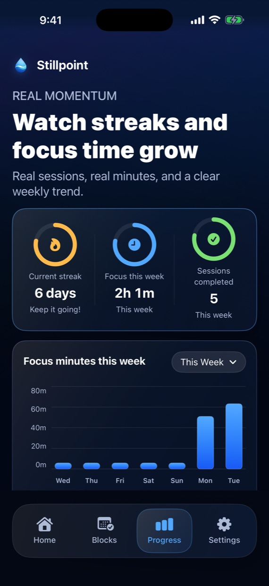

1. Start fast
Launch a focus block in seconds.
Pick your block list, choose a duration, and start immediately when you feel the drift starting.
Stillpoint helps you shut the door on the apps and websites that usually steal your best hours. Start one-tap focus blocks, plan risky time windows ahead of the week, and raise the friction on every easy escape route with Apple's Screen Time tools.
Most blockers fail because they only ask for a fresh burst of willpower. Stillpoint stacks quick starts, scheduled coverage, and stronger protection so the decision gets easier before the urge shows up.
Pick your block list, choose a duration, and start immediately when you feel the drift starting.
Build weekly schedules for work mornings, study windows, or evenings when scrolling normally wins.
Use Face ID, PIN, Screen Time passcode guidance, and uninstall friction to close the obvious backdoors.
Watch streaks, weekly focus time, and completed sessions grow instead of guessing whether the blocker helped.
The screenshot set mirrors the live product surfaces that matter for setup, scheduling, progress, and protection.




Stillpoint is designed for people who want their phone to calm down, not for people who want another noisy productivity dashboard. The current release keeps state on-device, avoids third-party analytics SDKs, and uses Apple's own purchase and identity flows when you choose them.
Stillpoint is especially useful when you already know the pattern you want to interrupt. These pages explain how the app fits the three strongest use cases it already supports.
See how manual sessions, weekly schedules, and website blocking can help protect exam prep and after-class catch-up.
Explore the study pageLearn how to use Stillpoint as an app and website blocker for high-value work windows that need stronger boundaries.
Explore the deep-work pageSee how Stillpoint can block social apps and risky websites during the hours when impulse usually wins.
Explore the doomscrolling pageGo straight to the public support page if you want the practical setup steps before downloading or recommending the app.
Open supportThese pages answer the broader “how do I block this on iPhone?” questions that people usually search before they ever know Stillpoint exists.
A practical guide to blocking social and other distracting apps with Apple's Screen Time tools, plus where Stillpoint fits if you want calmer recurring focus blocks.
Read the app-blocking guideAn honest guide to blocking websites and risky Safari weak points on iPhone, including when you need a dedicated blocker instead of just raw settings.
Read the website-blocking guideYes. Stillpoint uses Apple's Screen Time tooling to block websites alongside apps and categories, including Safari weak points if you add them to the block list. If you want the practical walkthrough first, read the website-blocking guide.
No. You can complete onboarding, grant Screen Time access, and start blocking locally without creating an account.
The current release does not include third-party analytics SDKs, ads, or a custom remote telemetry pipeline. Read the full privacy policy for the current implementation boundary.
You choose what to block, grant Apple's Screen Time permission, and then Stillpoint can run focus sessions or weekly schedules on your iPhone. If you want the setup logic before installing, start with the app-blocking guide.
Start with the free download, configure one real weak point, and make your next drift window harder to reopen.